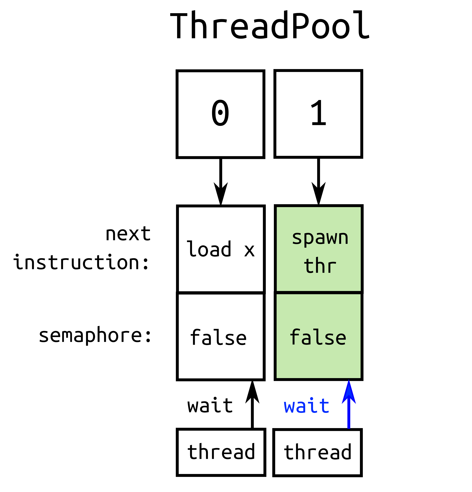

<!-- section:Title --> class: slide_title, no_number count: false # Automated Verification of Multi-Threaded Programs ### Susanne van den Elsen Software Developer @ Native Instruments ### Meeting C++ November 10, 2017 ??? Good afternoon and welcome everybody. My name is Susanne van den Elsen and I am a C++ software developer at Native Instruments here in Berlin. For those of you who don't know, Native Instruments is a company producing integrated software and hardware for music production. <br/> Before joining Native Instruments, I was doing research at the Max Planck Institute for Software Systems. My research area was in automated software verification and one of my projects focused on verification of multi-threaded programs. This will also be the topic of my talk today. <br/> My goal in this talk is to first provide an insight into why testing and verifying the correctness of multi-threaded programs is particularly challenging, and why traditional testing tools are inadequate for the task. Then I will present a technique, called Systematic Exploration, which explicitly addresses those challenges. I will demonstrate Systematic Exploration using a tool that I built in the context of my research on the topic. <!-- section:Challenge In Testing And Verifying Mulit-Threaded Programs --> <!-- >>> Slide --> --- class: slide_section, no_number count: false layout: false # Challenges in Testing and Verifying Multi-Threaded Programs ??? Let's look at why testing and verifying multi-threaded programs is challenging. When testing sequential programs, there are different types of bugs to look out for. These include bugs like - null pointer dereference - use-after-free errors - using uninitialized variables - buffer overflows (attempt to store data past the end of allocated storage) - ... and many many more. All these bugs can occur in multi-threaded programs too. But on top of that, there are bugs that are specific to programs that use multi-threading. I will refer to this class of bugs as "Concurrency Bugs" <!-- <<< --> <!-- subsection:Concurrency Bugs --> <!-- >>> Slide --> --- layout: true #### Challenges in Testing and Verifying Multi-Threaded Programs # Concurrency Bugs --- ??? In general, concurrency bugs arise from the fact that multiple threads are sharing the same resources. In this talk I focus on three types of bugs. -- count: false ##### Race Conditions ```cpp atomic<int> x = 0; thread t1([&x]{ x.store(1); }); thread t2([&x]{ x.store(2); }); t1.join(); t2.join(); assert(x.load() == 2); ``` ??? Race conditions: Arise when the program's correctness depends on the relative timing or ordering of thread instructions. --- count: false ##### Data Races ```cpp int x = 0; thread t1([&x]{ x = 1; }); thread t2([&x]{ x = 2; }); t1.join(); t2.join(); ``` ??? Data Races: Arise when two threads - access the same memory location; and - at least one of the accesses is a write; and - there is no mechanism in place to avoid the accesses from happening concurrently Since the C++11 memory model we can reason about memory accesses and dataraces are deemed undefined behaviour (so it is very important to make sure your programs are datarace free) --- count: false ##### Deadlocks <div class="code_left" style="width: 50%;"><pre><code class="language-cpp"> mutex m1, m2; thread t1([&m1, &m2]{ lock_guard<mutex> lock1(m1); lock_guard<mutex> lock2(m2); }); thread t2([&m1, &m2]{ lock_guard<mutex> lock2(m2); lock_guard<mutex> lock1(m1); }); t1.join(); t2.join(); </div></code></pre> ??? The third example of a concurrency bug is a deadlock. In the rest of the talk I will focus on finding deadlocks. Deadlock is a situation where a set of threads is blocked indefinitely, for example because each of them is waiting for one of the others to release a held resource. In this minimal example two threads are locking the same two threads, but in reversed order. -- count: false <div class="code_right" style="width: 45%;"><pre><code class="language-cpp"> t1 t2 lock m1; lock m2; </div></code></pre> ??? If thread1 first locks mutex1 and subsequently thread2 locks mutex2, both threads for their next instruction are waiting for the other to release the mutex they acquired, and none of them can make progress. BRIDGE ==>: <!-- TODO: memory errors, and ... --> So race conditions, data races and deadlocks are examples of concurrency bugs. Just like there are tools specifically tailored to detect for example typical memory-related errors, concurrency bugs ask for tools that specialize in detecting them. Luckily there are such tools available, the most well-known probably being ThreadSanitizer and Helgrind. <!-- <<< --> <!-- subsubsection:Concurrency Bug Detectors --> --- layout: true #### Challenges in Testing and Verifying Multi-Threaded Programs | Concurrency Bugs # Concurrency Bug Detectors <!-- >>> Slide --> --- ##### ThreadSanitizer / Helgrind <div class="mermaid" style="align: center; width: 100%; margin: 0px auto; margin-top: 3em;"> graph LR input_program[Source/Binary<br/>Input Program] exe_instr[Instrumented Executable] input_program --> |Compiler/Binary<br/>Instrumentation| exe_instr core[Analysis Core<br/><br/>- Monitoring facilities<br/><br/>- Datarace/Deadlock<br/> Detection Algorithms] core --> |Execute| exe_instr exe_instr --> |Trace| core core --> report[Bug Report] </div> ??? At a very high level, these tools work as follows: - They instrument the program under test so that it can be monitored by the core of the tool. - In the case of ThreadSanitizer, this instrumentation happens on the source-code level when compiling, while Helgrind instruments binary input programs. - The instrumented executable is then executed. The instrumentation allows the analysis core to record interesting events in the running program and the order in which they happened. Such a record is also called a "trace" of the execution. Events that are tracked include: - thread creation, joining and destruction; - memory accesses; - lock and unlock instructions - The analysis core deploys algorithms that are specifically tailored to detect potential dataraces and deadlocks in a trace. - If bugs are found, they are reported to the user. <!-- <<< --> <!-- Slide --> --- ##### ThreadSanitizer / Helgrind ```bash clang++ -fsanitize=thread -std=c++14 -pthread -g deadlock_pthread.cpp -o deadlock_pthread ./deadlock_pthread ``` ```cpp mutex m1, m2; thread t1([&m1, &m2]{ lock_guard<mutex> lock1(m1); lock_guard<mutex> lock2(m2); }); thread t2([&m1, &m2]{ lock_guard<mutex> lock2(m2); lock_guard<mutex> lock1(m1); }); t1.join(); t2.join(); ``` ??? Tools like ThreadSanitizer and Helgrind have been applied to large C++ programs and have successfully found concurrency errors in real software applications. If you're programming with threads, I highly encourage you to look into these tools if you haven't so already. What these tools rely on when detecting bugs is that the bug is detectable in the execution that they happended to monitor. However, as we'll see next, whether or not a potential bug in the program occurs depends heavily on the actual interleaving of the program's threads at runtime. The following small background_thread program illustrates this dependence. <!-- <<< --> <!-- subsubsection:Dependence on Thread Interleaving --> --- layout: true #### Challenges in Testing and Verifying Multi-Threaded Programs | Concurrency Bugs # Dependence on Thread Interleaving <!-- example:background_thread.cpp --> <!-- Slide --> --- <div class="code_left" style="width: 40%;"><pre><code class="language-cpp"> struct background_task_manager { void run_background_task() { if (!m_mutex.try_lock()) return; join_thread(); m_thread([this]() { m_mutex.lock(); // perform task m_mutex.unlock(); }); m_mutex.unlock(); } void join_thread() { if (m_thread.joinable()) m_thread.join(); } thread m_thread; mutex m_mutex; }; </code></pre></div> ??? The background_task_manager is a wrapper class around a background thread that has a specific task associated with it. Users of the manager can trigger the background thread by calling the run_background_task() function. The purpose of the manager is to make sure that the background thread can only be triggered if it is not currently running. To determine whether the background_thread is currently running, the manager has a mutex. The intended semantics of the mutex is that when it's locked, this either means that the background thread is being created, or that it is currently running and performing its task. So when a client calls run_background_task() it first try's to lock the mutex. If it doesn't succeed it returns immediately. If it does, it first checks if it has to join a finished background_thread. After that, it spawns a new one, unlocks the mutex and returns. The spawn background_thread first locks the mutex, to prevents other callers from triggering it, performs its task, and when it's finished, unlocking the mutex again. At this point, callers may trigger the background task again. -- <div class="code_right" style="width: 59%;"><pre><code class="language-cpp"> TEST(DeadlockTest) { background_task_manager manager; manager.run_background_task(); thread t2([&m]() { manager.run_background_task(); }); t2.join(); manager.join_thread(); } </code></pre></div> <!-- <<< --> <!-- >>> Slide --> --- <div class="code_left" style="width: 30%;"><pre><code class="language-cpp"> struct background_task_manager { void run_background_task() { if (!m_mutex.try_lock()) return; join_thread(); m_thread([this]() { m_mutex.lock(); // perform task m_mutex.unlock(); }); m_mutex.unlock(); } void join_thread() { if (m_thread.joinable()) m_thread.join(); } thread m_thread; mutex m_mutex; }; </code></pre></div> <div class="code_right" style="width: 69%;"><pre><code class="language-cpp"> main t2 m_thread m_mutex.try_lock() m_thread.joinable() == false m_thread.spawn() m_mutex.unlock() m_mutex.lock() // perform task m_mutex.unlock() m_mutex.try_lock() m_thread.joinable() == true m_thread.join() m_thread.spawn() m_mutex.unlock() m_mutex.lock() // perform task m_mutex.unlock() manager.join_thread() </code></pre></div> <!-- <<< --> <!-- >>> Slide --> --- <div class="code_left" style="width: 30%;"><pre><code class="language-cpp"> struct background_task_manager { void run_background_task() { if (!m_mutex.try_lock()) return; join_thread(); m_thread([this]() { m_mutex.lock(); // perform task m_mutex.unlock(); }); m_mutex.unlock(); } void join_thread() { if (m_thread.joinable()) m_thread.join(); } thread m_thread; mutex m_mutex; }; </code></pre></div> <div class="code_right" style="width: 69%;"><pre><code class="language-cpp"> main t2 m_thread m_mutex.try_lock() m_thread.joinable() == false m_thread.spawn() m_mutex.unlock() m_mutex.try_lock() m_thread.joinable() == true m_thread.join() m_mutex.lock() DEADLOCK </code></pre></div> ??? Whether or not the executing the unit test reveals the deadlock depends on the interleaving of the program's threads at runtime. This brings me to the second challenge for testing and verifying multi-threaded programs: From the viewpoint of the programmer, this interleaving is nondeterministic. <!-- <<< --> <!-- subsection:Nondeterminism --> --- layout: true #### Challenges in Testing and Verifying Multi-Threaded Programs # Nondeterminism <!-- >>> Slide --> --- ??? The order in which threads get to execute is *not* under the programmer's control, it is under the control of the OS (or the VM's) scheduler. -- count: false ##### OS Scheduler Policy e.g. ??? The scheduler makes it scheduling decisions based on a scheduler policy, which may vary from OS to OS. The policy may prescribe, among other things: -- count: false - may threads be preempted? ??? - Whether or not executing threads may be preempted, that is, whether the scheduler may force a context-switch to another thread, even though the running thread still has instructions to execute. -- count: false - how are priorities assigned? ??? - If and how threads get assigned priorities The scheduling decisions are also highly dependent on the execution environment. Factors include: -- count: false ##### Execution Environment e.g. -- count: false - current CPU load ??? - CPU load: may have an effect on whether threads get preempted -- count: false - presence and priorities of other threads on the CPU ??? - Prios: A thread on a CPU with many high-priority threads may exerience a slow-down relative to other threads in the same process on a different CPU -- count: false - what's in the cache ??? - Cache: e.g. if one thread is slowed down by cache misses <!-- <<< --> --- layout: true #### Challenges in Testing and Verifying Multi-Threaded Programs | Nondeterminism # Implications <!-- >>> Slide --> --- ??? What are the implications of nondeterminism for testing and verification of multi-threaded programs? -- count: false ##### Bugs are hard to find: -- count: false - Some bugs only occur under very rare thread interleavings <!-- TODO: Approach of inducing bad schedules by forcing context-switches is not systematic! --> -- count: false - Interleavings are not happening uniformly at random ??? Even if you would know your program has 10 different possible interleavings, running your test 10 times would not guarantee that a buggy interleaving will occur. It would not even guarantee that you don't see the same interleaving even time. -- count: false - "Heisenbugs" seem to disappear when you try to find them ??? So-called Heisenbugs: debugging statements or instrumentation instruction in the code, may have a dramatic effect on the scheduling choices, and may render the erronous interleaving way less likely to occur. -- count: false ##### Bugs are hard to reproduce: - If buggy behavior is observed, the next execution may be under a different schedule ??? If you've been lucky enough to find the bug, the bug is typically very hard to reproduce. -- count: false ##### It's hard to know whether a bug is fixed -- count: false - The bug may still exist on other interleavings -- count: false - The "fix" may have just made it less likely to occur ??? BRIDGE ==>: So, nondeterminism poses a serious challenge for testing and verifying multi-threaded programs. In the next part of the talk I am going to discuss Systematic Exploration, which is a technique to overcome exactly that challenge. <!-- section:Systematic Exploration --> <!-- >>> Slide --> --- class: slide_section, no_number count: false layout: false # Systematic Exploration ??? The main idea behind Systematic Exploration is to repeatedly execute the program under test, each time with a different schedule from a set of interesting schedules. Thereto, the exploration tool first has to gain control over the program's thread interleaving at runtime. In my tool, this is taken care of by the RecordReplay Library <!-- <<< --> <!-- >>> Slide --> --- layout: true #### Systematic Exploration # RecordReplay library: Taking "Control" over the Scheduler --- <div class="mermaid" style="align: center; width: 60%; margin: 0px auto;"> graph TD sut[Souce Code] source_instr[Instrumented Source] scheduler[Scheduler Library] exe_instr[Instrumented Executable] sut --> |Instrumentation Pass| source_instr source_instr --> exe_instr scheduler --> exe_instr </div> ??? The RecordReplay library which has two components: - a Scheduler Library and - a LLVM compiler instrumentation pass instrumenting the input program's source code with calls to the Scheduler library. - The instrumented source code is then linked to the Scheduler Library into an instrumented executable --- <div style="width: 55%; float: left;"> </div> <div style="width: 40%; float: right;"> <img src='./images/scheduler1.png' height="400"/> </div> ??? The Scheduler object maintains a ThreadPool which at any point during the execution of the program contains an entry for every active program thread. This entry contains a representation of the next instruction of the thread, which is initially empty. It also contains a semaphore, which allows the scheduler thread to control that thread. --- count: false <div style="width: 55%; float: left;"> <pre><code class="language-cpp"> scheduler::post_instruction(lock, mut.addr, debug_info); mut.lock(); </code></pre> </div> <div style="width: 40%; float: right;"> <img src='./images/scheduler1.png' height="400"/> </div> ??? Every memory instruction, lock or unlock instruction, thread creation abd joining instruction in the original source code is instrumented. That is, before each such instruction, the instrumentation pass has inserted a call to the function scheduler::post_instruction(). Inside the post_instruction function, the calling thread sets the instruction field in its associated entry in the thread pool. --- count: false <div style="width: 55%; float: left;"> <pre><code class="language-cpp"> scheduler::post_instruction(lock, mut.addr, debug_info); mut.lock(); </code></pre> </div> <div style="width: 40%; float: right;"> <img src='./images/scheduler2.png' height="400"/> </div> ??? Then it waits on its semaphore. --- count: false <div style="width: 55%; float: left;"> <pre><code class="language-cpp"> scheduler::post_instruction(lock, mut.addr, debug_info); mut.lock(); </code></pre> </div> <div style="width: 40%; float: right;"> <img src='./images/scheduler3.png' height="400"/> </div> --- count: false <div style="width: 55%; float: left;"><pre><code class="language-cpp"> scheduler::scheduler_thread(schedule) { trace_t trace; unsigned int round = 0; while (!done) { // wait until all active threads posted an instruction int next_id = schedule[round]; // record the thread pool and the next instruction trace.push_back(thread_pool.instructions(), thread_pool[next_tid].instruction); // allow the next thread to progress until its next // post_instruction call thread_pool.semaphores()[next_tid].post(); ++round; } } </code></pre></div> <div style="width: 40%; float: right;"> <img src='./images/scheduler4.png' height="400"/> </div> ??? The scheduler thread gets as input a schedule, which is a sequence of thread id's. At every scheduling round, the scheduler thread first waits until all the threads that are registered in the thread pool have an instruction posted. Then it looks up in the schedule which thread it should schedule in the current round. It adds the instruction posted by that thread to the execution trace, together with a snapshot of the current thread pool. --- count: false <div style="width: 55%; float: left;"><pre><code class="language-cpp"> scheduler::scheduler_thread(schedule) { trace_t trace; unsigned int round = 0; while (!done) { // wait until all active threads posted an instruction int next_id = schedule[round]; // record the thread pool and the next instruction trace.push_back(thread_pool.instructions(), thread_pool[next_tid].instruction); // allow the next thread to progress until its next // post_instruction call thread_pool.semaphores()[next_tid].post(); ++round; } } </code></pre></div> <div style="width: 40%; float: right;"> </div> ??? For the selected thread, it sets the associated semaphore to true, notifies the thread that it may continue executing, and increases the round. --- count: false <div style="width: 55%; float: left;"> <pre><code class="language-cpp"> scheduler::post_instruction(lock, mut.addr, debug_info); mut.lock(); . . // other instructions . scheduler::post_instruction(spawn, thr.id, debug_info); std::thread thr(start_routine); </code></pre> </div> <div style="width: 40%; float: right;"> </div> ??? The respective thread is no longer blocked on its semaphore, and can execute its original instruction, in this case locking a mutex. It keeps executing until the next call to scheduler::post_instruction. --- count: false <div style="width: 55%; float: left;"> <pre><code class="language-cpp"> scheduler::post_instruction(lock, mut.addr, debug_info); mut.lock(); . . // other instructions . scheduler::post_instruction(spawn, thr.id, debug_info); std::thread thr(start_routine); </code></pre> </div> <div style="width: 40%; float: right;">  </div> ??? It then again sets its instruction field in the thread pool and blocks on its semaphore. --- count: false <div style="width: 55%; float: left;"> </div> <div style="width: 40%; float: right;"> <img src='./images/scheduler7.png' height="400"/> </div> ??? At each point in time, there is at most one thread that is not blocked on its semaphore. This forces the underlying operating system's scheduler to schedule exactly that thread. --- <div class="mermaid" style="align: left; width: 50%; margin: 0px auto;"> graph LR schedule[0.0.0.1.1.0.2.2.0] exe_instr[Instrumented Executable] trace schedule --> exe_instr exe_instr --> trace </div> <div class="animation_no_shift_up" style="margin-top: -5em;"> .right[] </div> ??? The instrumented executable now takes as input a schedule and after execution dumps a trace of the execution. This trace is used by the Systematic Exploration algorithms implemented in the StateSpaceExplorer tool to compute the next schedules to run the instrumented executable under. Let's take a look at two algorithms implemented in the StateSpaceExplorer tool. <!-- <<< --> --- layout: true #### Systematic Exploration # Depth-First Exploration <!-- >>> Slide --> --- ```cpp depth_first_exploration(program) { for (schedule : possible_schedules(program)) { run(program, schedule); } } ``` ??? The first algorithm is a simple depth-first exploration. It simply explores all possible thread interleavings of the original input program. The set of possible interleavings is computed on-the-fly. The next slide illustrates this on the background_thread example I introduced earlier in the talk. <!-- <<< --> <!-- >>> Slide --> --- layout: true #### Systematic Exploration # Depth-First Exploration <span class="h_example">background_thread.cpp</span> --- --- count: false <div class="animation_no_shift_up" style="margin-right: 6em; margin-top: -4em;"> .right[] </div> ??? - The exploration starts with a certain schedule, in this case a non-preemptive one that prioritizes threads in the order in which they were created. - The algorithm backtracks the currnet trace until it finds a node where it can branch by scheduling another thread. - It creates a new schedule by taking the schedule up to that node, and appending the next thread's id to it. --- count: false <div class="animation_no_shift_up" style="margin-right: 6em; margin-top: -4em;"> .right[<img src='./generated_trees/background_thread.cpp/depth_first_search/trees/animations/1.png' height="500"/>] </div> --- count: false <div class="animation_no_shift_up" style="margin-right: 6em; margin-top: -4em;"> .right[] </div> --- count: false <div class="animation_no_shift_up" style="margin-right: 6em; margin-top: -4em;"> .right[<img src='./generated_trees/background_thread.cpp/depth_first_search/trees/animations/3.png' height="500"/>] </div> <!-- >>> Slide --> --- count: false .center[<img src='./generated_trees/background_thread.cpp/depth_first_search/trees/full_schedules_small.png' width="1100"/>] ??? This process continues, until eventually it reaches the root node of the tree again and all enabled threads have been scheduled from that root. This algorithm is very straightforward and, because it executes the program under all possible thread interleavings is guaranteed to find concurrency bugs if they are present. However: it suffers from a *major* problem: combinatorial explosion! The number of thread interleavings is exponential in the size of the program. For the relatively small background_thread program the search tree is still managable, but for real-world applications with many threads and many instructions, Depth First Search simply doesn't scale. The solution is to prune the tree of schedules considered by depth-first exploration and only explore a subset of the possible thread interleavings of an input program. <!-- <<< --> <!-- >>> Slide --> --- layout: true #### Systematic Exploration # Prune the State Space --- ##### Challenge Explore a subset of the possbile interleavings, but still provide coverage guarantees ??? The challenge is to choose that subset so carefully that coverage guarantees can still be provided. StateSpaceExplorer implements several state space pruning algorithms, each providing different coverage guarantees. In the rest of this talk I will discuss one of them: Partial Order Reduction. <!-- <<< --> --- layout: true #### Systematic Exploration | Exploration Algorithms # Dynamic Partial Order Reduction <!-- >>> Slide --> --- ```cpp partial_order_reduction(program, equivalence_relation) { for (equivalence_class : equivalence_classes(program, equivalence_relation)) { schedule = representative(equivalence_class); run(program, schedule); } } ``` .footnote[Due to Flanagan and Godefroid (2005)] ??? Dynamic Partial Order Reduction is due to Flanagan and Godefroid. The idea behind partial order reduction is to group schedules whose resulting executions are semantically equivalent, at least with respect to the class of concurrency bugs we're checking the input program against. The exploration algorithm makes sure that by the time it's finished it has, for each such equivalence class of schedules, seen at least one (and ideally exactly one) representative execution. BRIDGE FROM: At the heart of the equivalence relation is the concept of dependence. For verifying against dataraces, deadlocks and assertion failures the following dependence relation can be used. <!-- <<< --> <!-- >>> Slide --> --- ##### Dependence Relation <div style="float: left; width: 55%;"> Two instructions are <i>dependent</i> iff <ul> <li> they are carried out by the same thread; or</li> <li>memory instructions: <ul> <li>they operate on the same memory location; and</li> <li>at least one of them is a write</li> </ul> </li> <li>lock instructions: <ul> <li>they are coenabled; and</li> <li>can enable or disable each other</li> </ul> </div> -- count: false <div style="vertical-align: top; float: right; width: 45%;"><pre><code class="language-cpp"> // coenabled, and disable each other dependent( 1 Lock m, 2 Lock m ); // coenabled, and enable/disable each other dependent( 1 Trylock m, 2 Unlock m ); // not coenabled !dependent( 1 Lock m, 2 Unlock m ); </code></pre></div> ??? <!-- TODO --> <!-- <<< --> <!-- >>> Slide --> --- layout: true #### Systematic Exploration - Exploration Algorithms # Partial Order Reduction <span class="h_example">background_thread.cpp</span> --- --- count: false <div class="animation_dpor" style="margin-top: -7em"> .right[<img src='./generated_trees/background_thread.cpp/dpor/trees/animations/0.png' height="560"/>] </div> --- count: false <div class="animation_dpor" style="margin-top: -7em"> .right[<img src='./generated_trees/background_thread.cpp/dpor/trees/animations/1.png' height="560"/>] </div> --- count: false <div class="animation_dpor" style="margin-top: -7em"> .right[<img src='./generated_trees/background_thread.cpp/dpor/trees/animations/2.png' height="560"/>] </div> <!-- <<< --> <!-- section:Outro --> <!-- >>> Slide --> --- count: false layout: false class: slide_section, no_number # Thank you! <!-- <<< --> --- layout: true # References <!-- >>> Slide --> --- count: false class: no_number ### Tools <span class="h_link">StateSpaceExplorer:</span> https://github.com/s-vde/state-space-explorer <span class="h_link">Helgrind:</span> http://valgrind.org/docs/manual/hg-manual.html <span class="h_link">ThreadSanitizer:</span> https://github.com/google/sanitizers/wiki <br/><br/> <span class="h_link">CHESS:</span> https://chesstool.codeplex.com <span class="h_link">Concuerror:</span> http://concuerror.com <span class="h_link">Maple:</span> https://github.com/jieyu/maple <!-- <<< --> <!-- >>> Slide --> --- count: false class: no_number ### Selected Literature C. Flanagan and P. Godefroid (2005), *Dynamic Partial-Order Reduction for Model Checking Software*, In: POPL' 05, pages 110-121 <br class="br_link" /> https://dl.acm.org/citation.cfm?id=1040315 P. Godefroid (1997), *Model Checking for Programming Languages using VeriSoft*, InL POPL'97, pages 174-186 <br class="br_link" /> https://dl.acm.org/citation.cfm?id=263717&CFID=824726696&CFTOKEN=68367255 M. Musuvathi and S. Qadeer (2007), *Iterative Context Bounding for Systematic Testing of Multithreaded Programs*, In: PLDI' 07, pages 446-455 <br class="br_link" /> https://dl.acm.org/citation.cfm?id=1040315 M. Musuvathi et al. (2008), *Finding and Reproducing Heisenbugs in Concurrent Programs*, In OSDI'08, pages 267-280 <br class="br_link" /> https://dl.acm.org/citation.cfm?id=1855760 <!-- <<< --> <!-- ////////// -->